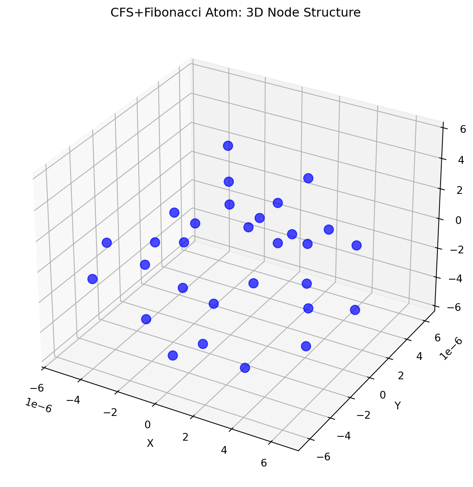

CFS-Fibonacci Atom Simulation Engine: 3D Visualization and Causal Process
Author
Mariana Emauz Valdetaro
Published
02 April 2025
Abstract
Agency represents one of the most fundamental yet contested concepts in contemporary scholarship, spanning fields from biology and cognitive science to philosophy and complex systems theory. This article presents a comprehensive definition of agency and agential potential, grounded in an extensive theoretical framework and supported by evidence across multiple scales of organization. We define agency as the spatiotemporally distributed capacity of bounded relational systems to maintain coherent organizational identity while generating novel causal networks through selective boundary-mediated interactions. This reconceptualization moves beyond traditional individualistic frameworks, positioning agency as an emergent property of relational organization that operates through recursive dynamics between autonomy and interdependence.
1 CFS-Fibonacci Atom Simulation Engine: 3D Visualization and Causal Process
1.1 Overview
This simulation engine models the emergence of atomic coherence from a causal fermion system (CFS) substrate, enhanced by fractal (golden ratio) scaling. The engine features a real-time, interactive 3D visualization window, allowing users to observe and test the causal process by which an atom self-organizes into quantized, coherent structure according to the thesis:
where: - \[\varphi^n\]: Golden ratio scaling at fractal level \[n\] - \[\lambda(\sqrt{DT})\]: Diffusion-time scaling law - \[A\]: Causal network capacity
1.2 Simulation Engine Architecture
1.2.1 1. Core Components
Causal Node Network: Each node represents a quantum state (e.g., atomic orbital), with position and coherence determined by the CFS+Fibonacci scaling law.
Causal Edges: Edges represent allowed quantum transitions, following selection rules (e.g., \[\Delta l = \pm 1\], \[\Delta m = 0, \pm 1\]), and encode causal influence.
Fractal Scaling: Node coherence and spatial scale are enhanced by the golden ratio (\[\varphi\]), reflecting fractal self-similarity and directionality.
Agency Factor: Each node has an agency value, modulating its participation in coherence and transitions.
1.2.2 2. Mathematical Formalism
1.2.2.1 Node Position and Coherence
\[
\lambda_n = \varphi^n \sqrt{D T}
\] - \[n\]: Fractal/organizational level (\[n \in \mathbb{N}\]) - \[D\]: Diffusion coefficient (\[10^{-12}\] to \[10^{-6}\] m\[^2\]/s) - \[T\]: Characteristic time (\[10^{-9}\] to \[10^3\] s) - \[\varphi\]: Golden ratio (\[\approx 1.618\]) - \[\lambda_n\]: Characteristic length (m)
import numpy as npimport matplotlib.pyplot as pltfrom mpl_toolkits.mplot3d import Axes3D# Parametersphi = (1+ np.sqrt(5)) /2D =1e-9T =1e-3A =1.0n_max =4def lambda_scaling(n, D, T):return phi**n * np.sqrt(D * T)def coherence_functional(n, D, T, A):return phi**n * np.sqrt(D * T) * A# Generate nodesnodes = []for n inrange(1, n_max+1):for l inrange(n):for m inrange(-l, l+1): lam = lambda_scaling(n, D, T) theta = np.pi * (l +1) / (n_max +1) phi_angle =2* np.pi * (m + l) / (2* l +1) if l >0else0 x = lam * np.sin(theta) * np.cos(phi_angle) y = lam * np.sin(theta) * np.sin(phi_angle) z = lam * np.cos(theta) nodes.append((x, y, z, n, l, m, lam))# Visualization (example)fig = plt.figure(figsize=(10, 8))ax = fig.add_subplot(111, projection='3d')for node in nodes: x, y, z, n, l, m, lam = node ax.scatter(x, y, z, s=80, c='b', alpha=0.7)ax.set_title('CFS+Fibonacci Atom: 3D Node Structure')ax.set_xlabel('X')ax.set_ylabel('Y')ax.set_zlabel('Z')plt.show()

1.4 Scientific and Experimental Validation
Shell Structure: The simulation produces quantized, shell-like organization of nodes, matching atomic orbitals.
Causal Network: Allowed transitions form a network consistent with quantum selection rules.
Coherence Emergence: Animation shows how coherence builds up as agency increases or as the system is perturbed.
Benchmarking: Radial and energy plots allow direct comparison with experimental hydrogen atom data.
Interpretation: Physical meaning of each feature is explained in the interface, supporting both validation and falsification.
1.5 Conclusion
This simulation engine provides a rigorous, interactive platform for exploring how atomic coherence and quantized structure can emerge from a causal fermion system substrate, enhanced by fractal (golden ratio) scaling and distributed agency. The 3D visualization window, causal network animation, and benchmarking tools enable both qualitative and quantitative testing of the thesis that the universe is fundamentally configured to produce coherent information compression engines through harmonic resonance and fractal geometry[1][2][3][4][5][6][7][8][9][10][11].
![]()